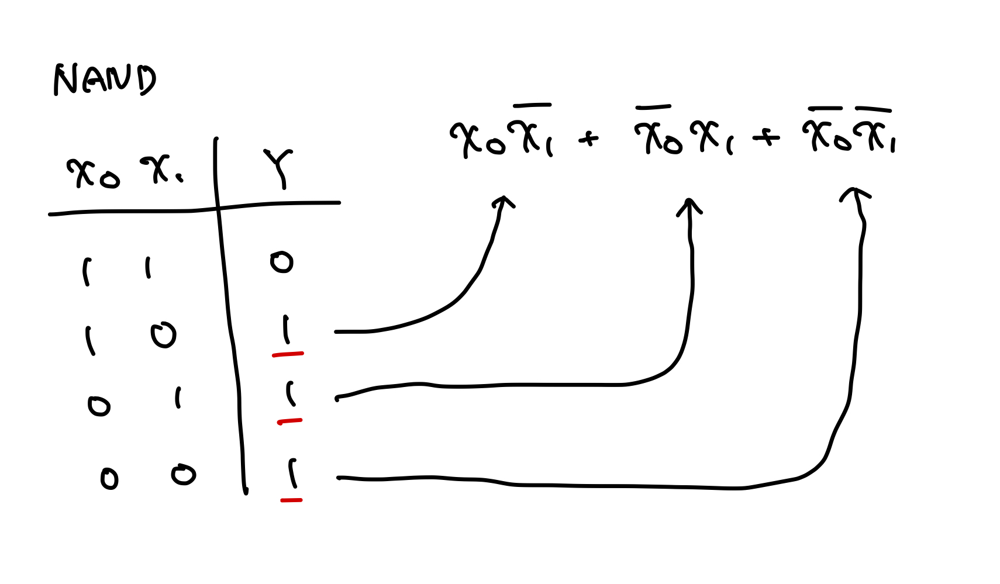
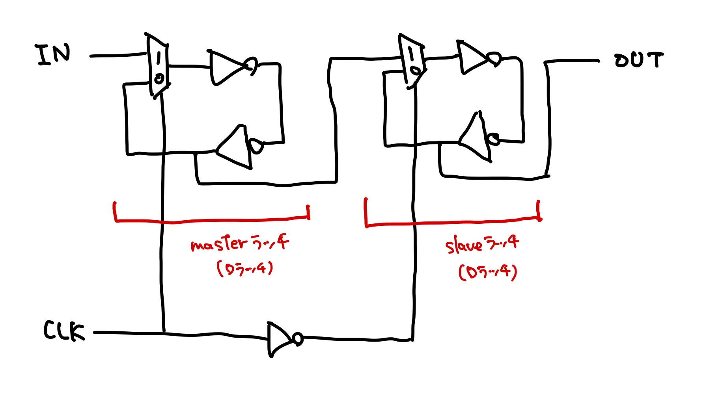

note.momee.mt
- Mutsuha Asadaのノート
- note.momee.mtのリポジトリ
- X: @mutsuha_asada
- GitHub: @momeemt
nixpkgs レビューログ
NixOS/nixpkgsのレビュー時に見逃していた・気を付けるべき点について記録しておく。
習慣
- できるだけ起床してから30〜60分間はnixpkgsへのレビューに充てる
- 朝の方が当日中に他のレビュワーやコントリビュータからの返信に対応しやすい
-
バージョン更新だけなど、レビューしやすいPRは作業の合間に取り組みたい...
- まだ
nixpkgs-reviewが実行されていないPRに対して自動で実行しておくツールが欲しい
- まだ
- 過去にレビューしたPRの更新や、レビュワーから指摘にはできるだけ優先的に対応する
- これが苦手なのが課題
一般
- Approveしてから他のレビュワーによって改善点が指摘された場合にはメモしておく
- Request Changesを送ってからマージされるまではTodoistに入れて確認するようにする
- Approveしてからコミッタにマージされない場合はNixOS Discourseのprs-ready-for-reviewに投稿する
- Request Changesを送る際にはできるだけ丁寧に改善点について説明する
ログ
2025/06/10
2025/06/09
- ocamlPackages.kcas: 0.6.1 -> 0.7.0
- ocamlPackages.{landmarks, landmarks-ppx}: 1.4 -> 1.5
-
ocamlPackages.mmap: 1.1.0 -> 1.2.0
useDune2は古いので削除
2025/06/08
2025/06/07
- ocamlPackages.mirage-crypto: 1.2.0 -> 2.0.1
- ocamlPackages.awa: 0.5.1 -> 0.5.2
- ocamlPackages.benchmark: 1.6 -> 1.7
- ocamlPackages.bitwuzla-cxx: 0.6.1 -> 0.8.0
- ocamlPackages.cow: 2.4.0 -> 2.5.0
- ocamlPackages.directories: 0.5 -> 0.6
2025/06/06
2025/06/05
-
ocamlPackages.lua-ml: 0.9.2 -> 0.9.4
odocはドキュメント生成のみに必要（with-doc）なので、buildPhaseには必要ないことがある
2025/06/04
-
ocamlPackages.wasm: 2.0.1 -> 2.0.2
- opamパッケージとしてビルドされているが、upstreamがduneプロジェクトの場合には
buildDunePackageを用いて書き直した方が良い
- opamパッケージとしてビルドされているが、upstreamがduneプロジェクトの場合には
-
ocamlPackages.ffmpeg: 1.2.1 -> 1.2.5
meta.changelogは、テキスト形式の方が扱いやすいので、https://raw.githubusercontent.com/で指定した方が良い
-
ocamlPackages.xenstore: 2.3.0 -> 2.4.0 (draft)
- xenstore-toolがバージョンアップによって消されたAPIを使っていて、かつ報告場所がないので困っている、という旨のコメントをOCamlパッケージをメンテナンスしてる方に投げてみた
- 30分くらいのつもりだったけど2時間経っていた
- SATySFi
- satysfiDirs.ml
- ここで~/.opam/
配下のパッケージパスを特定している SATYSFI_RUNTIMEを書き換えると出力先を選べる- Pythonスクリプト不要かも。satyrographosに処理を委譲できそう
NixOSでフォントが読み込めないとき
fc-cache -rv
詳細
uguisu側で修正したnix-configurationsをoshidori側で反映させたらAlacrittyがnerd-fontsを読み込めないと怒ってきた。実際にnvim-treeのアイコンが表示されなくなっていた。
nix-community/home-manager #6160を読んだら解決した。
どうやらhome-manager switchだけではフォントのリロードが行われないよう。
フーリエ変換
時間関数の集合である時間領域を、角周波数 の関数の集合である周波数領域に変換する写像をフーリエ変換と呼ぶ。 信号 のフーリエ変換 は次のように定義される。
逆に、周波数領域を時間領域に変換する写像をフーリエ逆変換と呼び、次のように定義される。
両者を合わせてフーリエ変換対と呼ぶ。それを と書く。
フーリエ変換の存在
フーリエ変換が存在する十分条件は、 が有限の不連続点を持ち、かつ可積分（）であること。 ステップ関数や三角関数など、これを満たさない関数についても などの減衰項を掛けた式のフーリエ変換を考えて、 の極限を取ると元の関数に「近づける」ことができる。
主要な関数のフーリエ変換対
デルタ関数
任意のなめらかな関数に対して、
を満たすようなをデルタ関数という。 デルタ関数は超関数であるが関数ではない。 インパルス信号を表現しており、フーリエ変換すると。
ボックス関数
半導体素子
- 電子回路の基本的な働きは信号の増幅
- 元の信号よりも大きな出力信号を得たい
- モチベーションの例
- ラジオがアンテナで受信した弱い信号を増幅してスピーカーから出力するとき
- 信号の増幅には能動素子が必要
- 抵抗やコンデンサ、コイルなどの受動素子は電気信号を増幅できない
- 真空管、トランジスタ、FETなど
- 1960年代以降は半導体技術が発展したことでトランジスタやFETが主流になり、真空管が使われることはあまりない
- 電気をよく通す物質を導体、ほとんど通さない物質を絶縁体、中間的な電気伝導度を持つ物質を半導体という
- ゲルマニウムやシリコンは半導体
- ダイオード、トランジスタ、FETなどの半導体素子の材料
- 不純物が含まれない半導体を真性半導体という
論理回路
組み合わせ回路と順序回路に分けられる。
組み合わせ回路
現在の入力によって出力が確定する回路で、論理ゲートにより構成される。理想的には入力が確定したら直ちに出力が確定するが、現実には出力までに通過する論理ゲートと配線の遅延の和だけ、遅延する。
順序回路
現在の入力と、回路内で記憶している状態によって出力が確定する回路。論理ゲート以外に、フリップフロップなどの値を確定できる記憶素子が必要になる。
記憶素子がクロックに合わせて記憶動作を行う同期回路と、クロックを持たずデータが生起した時のみ記憶動作を行う非同期回路に分かれる。設計がしやすいため、同期回路が普及している。 同期回路では記憶素子としてほとんどの場合においてD-FFを使用する。
主加法標準形
最小項同士の和の形になっている論理式。 真理値表から1を出力する入力変数の組み合わせから論理和を取ることで、簡単に欲しい出力を行う組み合わせ回路を構成することができる。これを加法標準形設計手法と呼ぶ。
NANDゲートを加法標準形設計手法で設計する

問題点
加法標準形設計手法で得られた組み合わせ回路は大きすぎる。 実際にNANDゲートはAND回路とNOT回路の2ゲートで構成できるが、上のように大量のゲートを必要とする。 したがって、論理式を簡約してから組み合わせ回路として実装する。
シノニム
- canonical Sum-of-Products (SOP)
- 論理和標準形
- 選言標準形
- Disjunctive normal form (DNF)
万能ゲート
あらゆる組み合わせ回路を構成可能な論理ゲートの組を万能な論理ゲート、万能ゲート（Universal logic gates）と呼ぶ。
万能ゲートの例
主加法標準形であったように、加法標準形設計手法であらゆる組み合わせ回路を構成できるので、{AND, OR, NOT}は万能ゲート。
また、より、{AND, NOT}も万能ゲート。
さらに、NANDやNORからAND、OR、NOTを構成することができるので、{NAND}と{NOR}も万能ゲート。たとえばnand2tetrisが実現できるのは、NANDが万能ゲートであるから。
NANDからAND、OR、NOTを導出する

ある回路を構成するゲートの最小個数を求める問題はNP困難（回路最小化問題）。
小さい回路の場合には全探索やパターンマッチによって事前に最小のゲート数を求めることができるが、n入力のブール関数で最小個数を求めることはできず、SATソルバーのようにヒューリスティックに求めるしかない。
回路最小化問題は最悪時間計算量と平均時間計算量がほぼ同じ。
ラッチ
フリップフロップの一種で、Texas Instruments社の規格表ではクロックが変化した時に状態および出力が変化するものをフリップフロップ（FF）と呼び、そうでないものをラッチと呼ぶ。
ラッチ

NOTゲートを2つ組み合わせることでデータ（Q）を保持できる。
もしQ = Hになれば、ずっとそれを維持できる（= データを記憶できる）し、強制的に電圧を落としてQ = Lにしても同様。
この回路を制御するために、外部から強制的にセット状態・リセット状態に設定するための入力を付けたのが ラッチ。

ここで、セットとリセット両方にHを入力したとき、先ほどの回路に帰着する。
S = Lにすると強制的にQ = Hとなり、セット状態になる。また、R = Lにすると強制的にQ = Lとなり、リセット状態になる。
セットとリセット両方にLを入力したとき、 も もHになってしまうため、禁止状態と呼ばれる。単にデータの保持という元の目的に照らせばありえない状態だというだけで、使うこと自体が禁止されているわけではない。
Dラッチ
D-FF
1ビットの情報を記憶できる論理回路をフリップフロップという。 D-FFはクロックが立ち上がり（立ち下り）に同期する（立ち上がるか、あるいは立ち下る時に入力を記憶する）。 クロック遷移以外のタイミングで入力が変化しても、記憶は上書きされない。
マスタースレーブ型
内部構造

セレクタはトランスミッションゲート2つとNOTゲート1つによって構成できる。 また、クロックの位相を変える（master側のセレクタとslave側のセレクタに入力するクロックを逆にする）と、上の図では立ち下り時に同期するが、立ち上り時に同期するように変えることができる。 実際の設計では立ち上り同期型を使う機会の方が多い。
制約
D-FFが入力を記憶するために、2つの時間的制約がある。
- セットアップ時間 ()
- 正常に記憶するためにクロックの立ち上がり時刻より前に入力を確定させておかなければならないが、その最小時間
- ホールド時間（）
- クロック立ち上がり後に入力を変えてはならない最小時間
立ち上がりに同期するD-FFでは、出力が確定するのに入力から取り込まれた値がmasterラッチを通り、立ち上がり時にslave側セレクタによってセレクトされ、2つのNOTゲートを通過した後になる。 slave側セレクタが動作する = 立ち上がる前に、入力がmasterラッチを通過していなければいけない。したがって、そのmasterラッチの伝播遅延分だけセットアップ時間として確保しなければならない。マスタースレーブ型のD-FFのセットアップ時間は、少なくともクロック周期の半分になる。 また、NOTゲートの伝播遅延とセレクタ切り替わり時間の間に入力が変化すると、変化後の値がslaveに記憶されてしまうため、ホールド時間を確保しなければならない。
エッジトリガ型
内部構造

SRラッチを使う。
CLK = 0のとき、P1 = HかつP2 = Hであるから、SRラッチは保持状態になり、入力に依らない。
CLKが立ち上がるとき、入力を記憶する。立ち上がり後に入力を変化させても、SRラッチの入力に変化はないので、記憶内容に影響しない。
マスタースレーブ型と異なり、セットアップ時間がクロック半周より短くても機能するので、周波数を大きくしたい場合などはエッジトリガ型のD-FFを用いる。
VLSI
超大規模集積回路（Very Large-Scale Integration）のこと。 1つのICの中に数十万〜数百万素子以上のトランジスタを集積した回路を指す。
MOS
金属、酸化膜、半導体の3層の構造から成る金属酸化膜半導体。 Metal Oxide Semiconductorの略。 また、接合部を1つしか持っていないため低消費電力かつ高集密度で実装できるトランジスタである、電界効果トランジスタ（FET: Field Effect Transistor）と合わせてMOS-FETと呼ばれる。 抵抗値の変化により電流の大小を調整する効果がある。
組み合わせ
MOS-FETは組み合わせによりnMOS（nチャネル型）とpMOS（pチャネル型）の2つに分けることができる。
nMOS
- ゲートにHレベルを与えるとONになる
- ゲートにLレベルを与えるとOFFになる
pMOS
- ゲートにHレベルを与えるとOFFになる
- ゲートにLレベルを与えるとONになる
VLSIの分類
PLD
Programmable Logic Deviceの略。 加法標準形の構成要素をあらかじめ並べたもので、交点にスイッチを置くことで結線・断線が後から制御できる。
論理ゲートへの入力信号線のうち、使わなかったものを0か1に固定する。これを端子処理という。
FPGA
メモリで真理値表（LUT: Look-Up Table）を作り、アドレス線を入力信号線、アドレス値を入力真理値と考え、出力真理値を記憶しておく。
ゲートアレイ
NANDゲートまたはNORゲートの配列があらかじめ用意されており、ゲート間の繋ぎ方を設計する。
スタンダードセル
論理ゲート、複合ゲート、演算器などの集まりであるセルライブラリから部品を選択して並べて繋げる。
フルカスタム
MOS-FETの設計から出発して、ほぼ全ての機能を自由に設計する。
電気的特性と高速化
論理ゲートやコンデンサが持つ電気的特性と、それにより生じる遅延の原因、VLSIにおける高速化の役割分担について。
絶対最大定格と推奨動作条件
ICの物理的な制約から超えてはならない電圧や電流、周囲環境の温度などを絶対最大定格という。 また、正常に動作することが保証されている範囲を推奨動作条件という。
Wired-OR
論理ゲートの出力同士を直結することをWired-ORという。 CMOS-FETでこれを行うと破損の原因になるため禁止されているが、オープンドレインなどのCMOS以外の回路ではWired-ORを使うこともある。
伝播遅延
組み合わせ回路における、入力が確定してから出力が確定するまでの時間遅れを、組み合わせ回路の伝播遅延と呼ぶ。 そのうち、制御信号が確定してから出力が確定するまでの時間をセレクタのスイッチング時間という。
フリップフロップが入力を取り込んでからそれを出力するまでの時間遅れを、FFの出力伝播遅延という。 回路の種類を問わず、真理値が0から1になるまでにかかる時間を立ち上り時間、1から0になるまでにかかる時間を立ち下り時間という。
寄生容量
電子回路の中に設計者の意図せず発生する静電容量のこと。 FETのゲート端子にできるゲート容量や、ドレイン・電源間、ソース・GND間などに生じる拡散容量などがある。 また、FETがONのときのドレイン・ソース間抵抗をオン抵抗と呼ぶ。
高速化
VLSIの高速化は主に2つに分けられる。 まず、論理ゲートやD-FFの伝播遅延を減らすことで、これは主に半導体物理の役割。 次に、回路構成を工夫してクリティカルパスを短くすることで、これはCSの役割。
加算器
加算器は最も基本的な回路で、減算は2の補数の加算として、乗算は加算の繰り返しで、除算は減算の繰り返しで計算できるので、加算器を高速化することで、四則演算すべてを高速化することができる。
半加算器 (half adder)
2進数の加算を行う論理回路で、繰り上がりを考慮せず単に2つの和を求める。
全加算器 (full adder)
2進数の加算を行う論理回路で、下の桁からのくり上がりを考慮して3つの和を求める。 CMOSではANDゲートやORゲートを直接実装することは非効率的。XORゲートはトランスミッションゲートとNOTゲートで実装できるので、ANDゲートやORゲートをNANDゲートやNORゲートで置き換えることで実装する。
RC遅延モデルによる全加算器の遅延の計算
2入力以上のゲートではRC遅延モデルは煩雑になり計算が難しい。
単位遅延による遅延の計算
CMOSゲート1個あたりの伝播遅延を1と仮定する。 ゲートの規模や複雑さによらず遅延は全て同じだとみなすことで、おおよその回路の伝播遅延を求める。
- XORゲート
- NOTゲートとトランスミッションゲートから成る
- 単位遅延は2
- 出力の遅延は最大でXORゲートを2つ通過するから単位遅延は4
- 桁上がり出力の遅延はXORゲートとNANDゲート2つを通過するから同じく単位遅延は4
桁上げ先見加算器
各桁の桁上げ入力を全て一斉に計算する加算器。 CLA: Carry-lookagead adder。
Automatically Repairing Dependency-Related Build Breakage
- 論文リンク: Automatically repairing dependency-related build breakage
- 読んだ日: 2025/06/16
何
- Maven（Javaのビルドツール）の依存関係によるビルドエラーを自動で修復するツールの提案
- 自動修復のための3戦略
- バージョン更新
- 依存性の削除
- リポジトリの追加
- ツールにより、84のビルドエラーが発生するパッケージのうち、45個（54%）を自動修復できた
リサーチクエスチョンを2つ立てている
- 開発者はどうやって依存関係のビルドエラーを直しているのか？
- 依存関係のビルドエラーを自動修復できるのか？